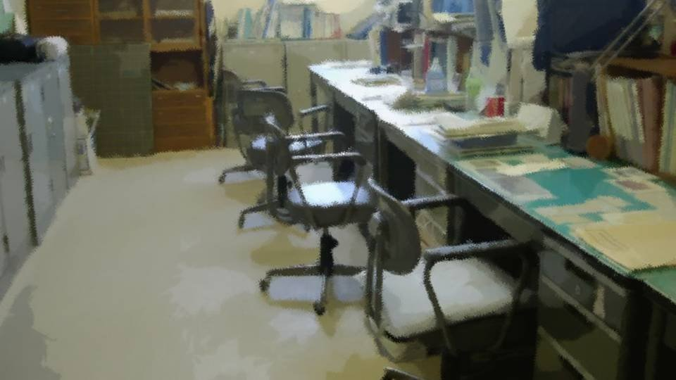

Script 00001849

"Sensei, please! Give Kogori-senpai one more chance!"
"Goto-san... But it's already been decided under the rules we set at the start."
"I know that, that's why I came all the way here to ask! With Kogori-senpai's ability, I'm sure she could lead the team! So...!"
"Goto-san... But it's already been decided under the rules we set at the start."
"I know that, that's why I came all the way here to ask! With Kogori-senpai's ability, I'm sure she could lead the team! So...!"
"I know that full well.
Listen, in sports, you can't always compete at full strength.
Nobody can give 100% every single time.
That's why you practice, so you can give 100% as often as possible.
Kogori's no different. This time she couldn't give 100%, so she didn't make the cut.
If she'd been practicing properly all along―"
"But with Kogori-senpai it's her constitution! Practice and effort can't do anything about it!"
"............"
"By July, Kogori-senpai's April sickness should be better. So..."
"Then who do I cut?"
"Huh?"
"In place of Kogori, who do I cut from the starting lineup? The six starters, the bench and the libero are all already set, so who do I cut?"
"............"
"By July, Kogori-senpai's April sickness should be better. So..."
"Then who do I cut?"
"Huh?"
"In place of Kogori, who do I cut from the starting lineup? The six starters, the bench and the libero are all already set, so who do I cut?"
"Even if you ask me who..."
"At this point I can't tell anyone, 'I'm putting Kogori in, so you're out after all.' Listen, Goto-san, constitution or whatever, everyone went into the tryouts on April 6 under the same conditions. Nobody cheated or pulled any tricks. Could you, Goto-san, cut someone who won their place in fair tryouts?"
"At this point I can't tell anyone, 'I'm putting Kogori in, so you're out after all.' Listen, Goto-san, constitution or whatever, everyone went into the tryouts on April 6 under the same conditions. Nobody cheated or pulled any tricks. Could you, Goto-san, cut someone who won their place in fair tryouts?"
"That's..."
"I understand how you feel too, Goto-san. Goto-san, you've been supporting Kogori behind everyone's back, after all."
"You knew...?"
"So of course you'd want Kogori to become a starter more than anyone. But you know, if I had my way, I'd want everyone to be a starter. But the number of spots is fixed, so I have to narrow it down. That's why I held fair tryouts."
"I understand how you feel too, Goto-san. Goto-san, you've been supporting Kogori behind everyone's back, after all."
"You knew...?"
"So of course you'd want Kogori to become a starter more than anyone. But you know, if I had my way, I'd want everyone to be a starter. But the number of spots is fixed, so I have to narrow it down. That's why I held fair tryouts."
"But at least a spot on the bench..."
"Then why did you, Goto-san, come to tell me?"
"Huh?"
"Why did you, Goto-san, come here, and not Kogori? What did Kogori say?"
"That she has no regrets anymore..."
"Then why did you, Goto-san, come to tell me?"
"Huh?"
"Why did you, Goto-san, come here, and not Kogori? What did Kogori say?"
"That she has no regrets anymore..."
"That's the answer Kogori came to. Let's respect it.
Even if we knock someone else off now and put her on the bench, Kogori would just feel awkward.
She doesn't want to be a starter so badly that she'd go that far.
Kogori didn't want to be a starter; she wanted to be recognized as having what it takes to be one.
That's what I think."
"............"
"Honestly, it hurts that Kogori isn't making the starting lineup. So if Kogori had said herself, 'I want one more chance,' I'd have considered it, and depending on the situation, swapping the lineup could have happened. But if that's not the case, then that's the end of it. If anything, putting Kogori on the team would only be a burden on her."
"Honestly, it hurts that Kogori isn't making the starting lineup. So if Kogori had said herself, 'I want one more chance,' I'd have considered it, and depending on the situation, swapping the lineup could have happened. But if that's not the case, then that's the end of it. If anything, putting Kogori on the team would only be a burden on her."
"Kogori-senpai is...
I see. I had it wrong.
It's not so much that she wanted to be a starter; she wanted to be recognized.
I was supporting her the whole time, and I didn't notice at all..."
"At first she was clumsy and couldn't move, but she still didn't give up. And now, as you can see, she's a different person. Isn't that enough on its own?"
"At first she was clumsy and couldn't move, but she still didn't give up. And now, as you can see, she's a different person. Isn't that enough on its own?"
"Yes..."
"Most of all, I'd like you, Goto-san, to recognize that. Kogori must want recognition from you, Goto-san, more than from me or anyone else on the team."
"Understood. I finally get it now."
"All right, it's late, so be careful going home."
"Yes. Goodbye."
"Most of all, I'd like you, Goto-san, to recognize that. Kogori must want recognition from you, Goto-san, more than from me or anyone else on the team."
"Understood. I finally get it now."
"All right, it's late, so be careful going home."
"Yes. Goodbye."